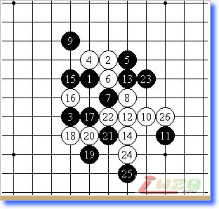
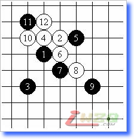
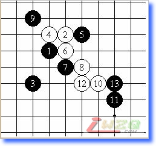
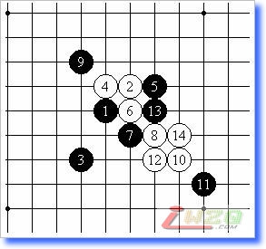

第三届上海“团结杯”五子棋十强赛本赛自战记（一）
#1 第三届上海“团结杯”五子棋十强赛本赛自战记（一） 作者：有志青年 发表时间：2007-8-1 16:53:58
原文地址：http://www.shwzq.com/online/ShowArticle.asp?ArticleID=1521
前言
由于先后遭受SARS和禽流感的冲击，本该在2003年“五.一”期间举办的第三届上海“团结杯”五子棋十强赛本赛，被迫推迟到今年春节才举办。
“团结杯”十强赛始创于1997年末，由罗锦伟提议并出资，李洪斌、顾伟国、章志强、葛凌峰和笔者等棋手积极响应，由上海五子棋界第一次举办的A级赛事。其宗旨是为上海最优秀的选手们提供一个展现高超棋艺、体现真我风采的交流平台。1997年12月—1998年1月期间，举办了第一届。1998年11月，举办了第二届。此后，由于各种原因，直到2003年才举办了第三届的预选赛。
这项比赛在创办时规定，获得本赛前四名的选手将被列为下届种子棋手，直接晋级本赛。首届由大家根据第一届“友情杯”个人邀请赛的成绩并结合实际，推举产生四位选手作为种子，分别是：王伟明3级（当时）、李洪斌、章志强和罗锦伟6级（当时）。后来，由于笔者临近考试，无法参加预选赛，经组委会协调，章志强主动让出种子名额，自己则参加预选赛。最终，第一届前四名分别是：李洪斌、章志强、笔者和罗锦伟。第二届比赛（自第二届起，允许外省市棋手持外卡参赛），笔者因故未能参赛，最后前四名分别是：葛凌峰1级（当时）、罗锦伟初段（当时）、顾伟国1级（当时）和赵锴1级（当时）。2003年2月，间隔了4年的“团结杯”举办第三届预选赛，朱建锋、陈文夏、薛文曦、盛云峰（江苏无锡）、蔡力捷和兰洋（江苏镇江）获得晋级。
2004年底，比赛重新燃起烽火。由于4位种子棋手中罗锦伟名誉七段和赵锴五段分别有事无法参赛，顾伟国五段则根据协会安排担任裁判长，只有葛凌峰六段可以参赛，因此，协会决定于2005年1月举办二次预选赛。经过7轮角逐，最终许斌二段和王莹二段（女）分获前二名，笔者作为第3名踏上末班车幸运地进入本赛。吴杰5级、戈翀宇初段、姚晓晖初段（女）和沈毅二段则作为替补选手。同时，协会宣布，自本届比赛起，只保留前三名作为下一届的种子棋手。
插曲
比赛前夕，出现了1个好消息和1个坏消息。好消息是葛凌峰为比赛拉来了比较充裕的赞助。坏消息是兰洋三段、蔡力捷三段和王莹分别向协会表示因故无法参赛。最后，通过紧张的协调，确定了吴杰、戈翀宇和沈毅替补上场，这也是赛前没有预想到的变化。
第一天
比赛安排在凯豪宾馆。据宾馆方面的负责人介绍，这里曾经是上海围棋移动通讯队的备选战场。一大早，敬业的裁判长顾伟国，裁判员张力军三段和周彪初格已经布置好赛场。随后，选手们陆续赶到。在裁判长的安排下，大家开始抽签。笔者抽到了9号。九时半，比赛正式开始。
综合的考验——最有意思的一局
首轮，对阵戈翀宇。根据单循环的规定，每轮的布局方在赛前就确定了，这样也便于选手有针对性地做准备。对于戈翀宇的了解主要是通过别人的介绍，平时的交流以及二次预选赛的交手。说到这里，要插一句，戈翀宇是这次比赛最晚抵达赛场的选手，因为路远，外面又下着雨，到的时候衣服已经湿透了。比赛时他是穿着湿衣服进行的，这也多少影响到对局时的心态。
戈翀宇布局“名月” （见图1），

同二次预选赛的布局一样。考虑到最近研究名月成风，从研究成果分析，名月执白的可下局面越来越少，在这种背景下，戈翀宇依然这样布局，联系到二次预选赛被他“名月”执白轻松“欺骗”了一把（这是自1998年以来下的最臭的一盘），为了以防万一，最终决定不交换。白4最强变化，黑5、白6、黑7也是常见的定式。

到这里笔者稍微思考了一下。目前的研究多数围绕白8以后展开，对于白8没有任何讨论，而事实上白8活三的变化还是具有一定欺骗性的。考虑到这里，白8毅然活三。戈翀宇显然是愣了一下，但是黑9的防守方向正确，如果逆向防守，白棋能够取胜（见参考图1）。

白10、12几乎是唯一的变化。在这里考验黑棋第13手的应法是关键。黑13最强应手是唯一的（见参 考图2），

以后白棋虽有变化，但黑正确防御后能取胜。实战黑13错招，白14后白必胜。白1
#2 Re:第三届上海“团结杯”五子棋十强赛本赛自战记（一） 作者：5子~学遥 发表时间：2007-8-2 22:16:54
看不懂啊!不过还是谢谢啊!^_^